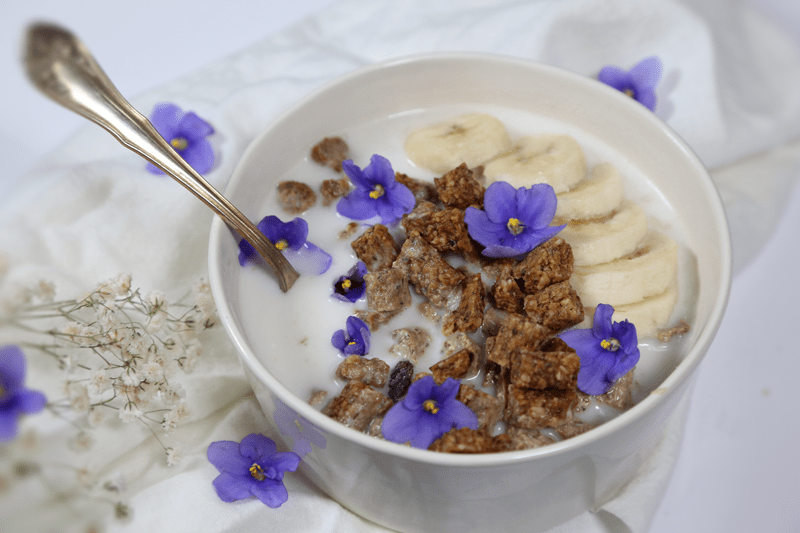
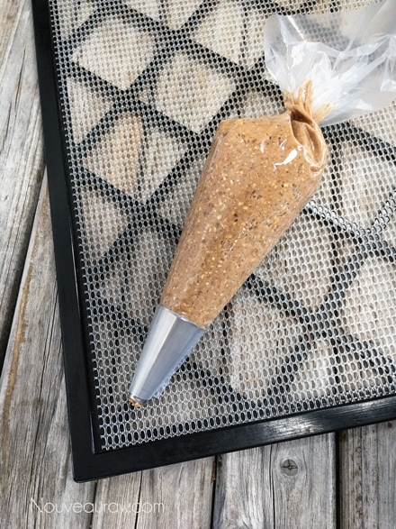
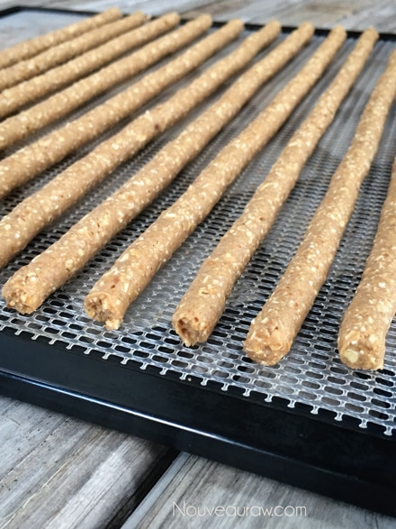

Peanut Butter Banana Raisin Cereal
~ raw, vegan, gluten-free ~
This recipe just sort of happened… I am going to refer to it as the Big Bang Theory. I stepped into my kitchen, started pulling ingredients out onto my counter, and ka-boom! Flavors and shapes just started forming.

Roll it into a ball; it’s a truffle? No. Flatten it, and it’s a cookie?! No. Press it flat and square it up and it’s a bar? Naw. Crumble it up on the dehydrator sheet, and it’s granola? Nope! Put the batter in a piping bag, and it’s… it’s…it’s a cereal! Yea, yea that’s the ticket! I mean, this recipe could be any one of those things that I just mentioned, but the more I played around, the more I started craving cereal.
A long-lost food that I just don’t indulge in that much anymore. I miss snuggling up on the end of the couch, watching the Flintstones (HUGE fan) with my cereal bowl right under my chin as I blindly spooned in bite after bite of cereal, and let’s not forget to mention the milk that was always dripping from my chin. Aaah, sometimes I wish life was as simple now as it was back then.
In the picture to the right here, I mixed this cereal along with another new creation, Cacao Buckwheat Puff Cereal. I took this to my girlfriend this morning for her to have for breakfast. She shot me an email later in the day that read, “I did love the cereal. It was the perfect mix of sweet and non-sweet, crispy and chewy!! I could eat it without milk like trail mix or with milk…both ways were delicious!” Now, it doesn’t have to be paired with the other cereal; it just added another level of depth. Serve it up with your favorite nut milk, turn on the Flintstones, and lose yourself!
 Ingredients:
Ingredients:
Yields 4 1/2 cups cereal
Dry Ingredients:
- 2 cups gluten-free oat flour, soaked & dehydrated
- 2 tsp ground Ceylon cinnamon
- 1/2 cup lucuma sweetener
- 1 scoop Vanilla Protein powder (optional)
Wet Ingredients:
Preparation:
- In the food processor using the “S” blade, make the oat flour. Add the lucuma, cinnamon, and protein powder, pulse to mix. Put in a small bowl and set aside.
- In the same food processor bowl, combine the bananas, milk, peanut butter, vanilla, and stevia. Now add in the dry ingredients and combine. Taste test and see if the batter is sweet enough.
- Place the dough in a piping bag fitted with a large tip. Pipe the dough out in long strips on the non-stick teflex sheets that come with the dehydrator.
- Option: you can spread this batter out onto the teflex sheet to dry it and then just break it into pieces to create your cereal.
- Dehydrate at 145 degrees (F) for 1 hour, then reduce to 115 degrees (F) for approx. 8 hours or until dry.
- Slice the sticks into bites size pieces for your cereal.
- Store in an airtight glass container in the fridge to extend the shelf life.
- Serve with nut milk for a nutritious breakfast or eat by the handful for a mid-afternoon snack.
The Institute of Culinary Ingredients™
- Click (here) to learn why I use stevia.
- Why do I specify Ceylon cinnamon? Click (here) to learn why.
- What is Himalayan pink salt and does it really matter? Click (here) to read more about it.
- Are oats gluten-free? Yes, read more about that (here).
- Are oats raw? Yes, they can be found. Click (here) to learn more.
- Do I need to soak and dehydrate oats? Not required but recommended. Click (here) to see why.
Culinary Explanations:
- Why do I start the dehydrator at 145 degrees (F)? Click (here) to learn the reason behind this.
- When working with fresh ingredients, it is important to taste test as you build a recipe. Learn why (here).
- Don’t own a dehydrator? Learn how to use your oven (here). I do however truly believe that it is a worthwhile investment. Click (here) to learn what I use.


© AmieSue.com